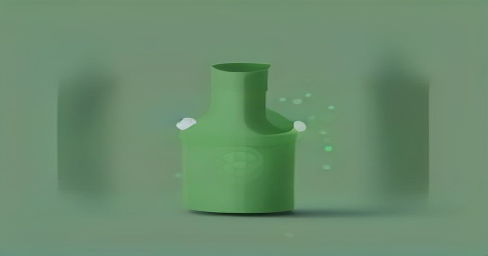

Context Engineering & Long-Context Management
More Context Is Not the Same as Better Context
August 31, 2026
Everyone is racing to stuff more tokens into the window. That is not context engineering.
Read full article →